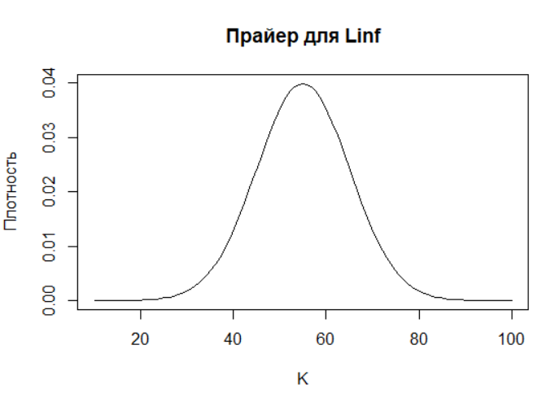

curve(dnorm(x, 55, 10), 10, 100,
xlab = "K", ylab = "Плотность",
main = "Прайер для Linf")29 Байесовский подход
29.1 Введение
Если частотная статистика — это формальная наука о том, что говорят данные, то байесовский подход — это искусство ведения диалога между данными и нашими предварительными “априорными” знаниями. Байесовская философия радикально проста: мы начинаем не с чистого листа, а с формализованного опыта — априорного распределения. Затем данные вносят свои коррективы, и мы получаем апостериорное распределение — обновлённые знания, которые уже учитывают и экспертизу, и наблюдения. Фундаментальное соотношение байесовского вывода задаётся формулой Байеса:
\[ P(\theta \mid D) = \frac{P(D \mid \theta) \cdot P(\theta)}{P(D)} \]
где:
- \(P(\theta)\) — априорная вероятность, отражающая наши знания или убеждения о параметре \(\theta\) до наблюдения данных;
- \(P(D \mid \theta)\) — правдоподобие, то есть вероятность наблюдать данные \(D\) при заданном значении параметра \(\theta\);
- \(P(\theta \mid D)\) — апостериорная вероятность, представляющая обновлённые знания о \(\theta\) после учёта данных \(D\);
- \(P(D)\) — нормировочная константа (маргинальное правдоподобие), обеспечивающая, чтобы апостериорное распределение интегрировалось к единице.
На практике часто используют пропорциональную форму, так как \(P(D)\) не зависит от \(\theta\):
\[ P(\theta \mid D) \propto P(D \mid \theta) \cdot P(\theta) \] В контексте оценки, например, роста рыб это означает: мы можем использовать знания о похожих видах, предыдущие исследования или даже экспертные оценки (“байки бывалых ихтиологов”) , чтобы задать более или менее реалистичные ожидания для параметров уравнения Берталанфи — до того, как увидим первую точку данных.
В практике оценки водных биоресурсов мы редко сталкиваемся с полными, сбалансированными и «чистыми» данными. Чаще всего перед нами — разрозненные уловы, фрагментарные съёмки, практически полное отсутствие возрастной структуры, неточная методика сбора и, как следствие, высокая неопределённость. В таких условиях классические частотные методы — опирающиеся на идею «единственной истинной оценки» — часто дают иллюзию точности, скрывая за красивыми p‑значениями хрупкость выводов.
Байесовский подход предлагает иной путь — не бороться с неопределённостью, а моделировать её явно. Его суть лежит не столько в формулах, сколько в мировоззрении:
«Все знания условны. Мы начинаем с того, что знаем (априорное знание), обновляем это знание по мере поступления данных (правдоподобие) и получаем то, что знаем теперь (апостериорное знание)».
Это особенно важно в гидробиологии, где экспертные суждения ихтиологов, данные по близкородственным видам, исторические аналоги и даже здравый смысл часто содержат больше информации, чем несколько десятков наблюдений. Байесовский формализм позволяет превратить субъективное мнение в количественную гипотезу, которую можно проверить, скорректировать и объединить с эмпирическими данными.
29.2 Почему именно байесовский подход в оценке роста?
Уравнение фон Берталанффи — классический инструмент описания роста рыб, но его параметры (L∞ и K) чрезвычайно чувствительны к структуре данных. При малом числе возрастных групп или смещённой выборке (например, только молодые особи) классическая нелинейная регрессия может выдать биологически неправдоподобные оценки: L∞ = 200 см у трески или K = 0.01 у короткоживущей сельди. Байесовский подход решает эту проблему через ограничение пространства поиска с помощью априорных распределений, основанных на биологических знаниях.
Например, если эксперт говорит: «У этого вида предельная длина, скорее всего, около 55 см, но может колебаться от 40 до 70 см», мы не игнорируем это как «ненаучное», а записываем в виде нормального распределения L∞ ~ N(55, 10). Это не догма — это рабочая гипотеза, которую данные могут усилить, ослабить или полностью опровергнуть.

Что даёт байесовский подход на практике?
Количественная оценка неопределённости.
Вместо одного числа (например, L∞ = 62.2 см) мы получаем полное распределение вероятностей, из которого можно извлечь доверительные интервалы, стандартные ошибки и даже вероятность того, что L∞ > 70 см. Это важно при управлении запасами: если 95% интервал для L∞ включает значения, при которых MSY падает на 30%, это сигнал к осторожности (в моделях оценки Lopt).Устойчивость при малых выборках.
Даже при 4–6 наблюдениях байесовская модель не «ломается», а выдаёт обоснованную оценку, основанную на компромиссе между данными и априором. Это делает её идеальной для редких, труднодоступных или недавно осваиваемых видов.Прозрачность допущений.
Все исходные предположения — о диапазоне K, форме распределения ошибок, степени корреляции параметров — задаются явно. Это позволяет легко проводить анализ чувствительности: что изменится, если эксперт ошибся на 10%? Как повлияет изменение формы прайера (априора)?Интеграция разных источников информации.
Байесовский каркас естественно объединяет данные съёмок, промысла, лабораторных экспериментов и литературных обзоров в единую модель. Это особенно ценно в условиях Data-Limited Fisheries, где каждый фрагмент информации на вес золота.
Байес как мост между наукой и управлением
Управленческие решения в рыболовстве редко принимаются в условиях полной определённости. Регуляторы хотят знать не только «какой ОДУ (общий допустимый улов) установить», но и «с какой вероятностью мы не переловим при таком ОДУ». Байесовский подход отвечает на этот вопрос напрямую: он даёт распределение возможных траекторий запаса, а не одну «среднюю» линию. Это позволяет строить предосторожные стратегии, учитывающие худший, средний и лучший сценарии.
Кроме того, байесовские результаты легко интерпретировать даже для нестатистиков:
«С вероятностью 90% предельная длина находится между 58 и 66 см» — это понятнее, чем «коэффициент значим при p < 0.05».
Дисциплина скромности
Байесовский подход — это не просто набор формул, а интеллектуальная дисциплина. Он заставляет нас признать:
Мы не знаем всего.
Наши данные неполны.
Наши модели — упрощения реальности.
Но вместо того чтобы скрывать эти ограничения, байесовский анализ делает их частью процесса. Он учит нас думать вероятностно, принимать решения, устойчивые к неопределённости, и честно сообщать о границах нашего знания.
В этом практическом занятии мы не просто «прогоним скрипт», а пройдём полный цикл байесовского анализа: от формализации экспертного мнения до визуализации апостериорных распределений и интерпретации результатов в контексте устойчивого управления. Мы увидим, как даже скудные данные, в сочетании с биологическим смыслом, позволяют построить надёжную оценку параметров роста — и, что важнее, понять, насколько этой оценке можно доверять.
29.3 Что делаем?
Скрипт целиком.
Практическое занятие посвящено байесовскому подходу в оценке параметров роста рыбы на примере уравнения фон Берталанффи в условиях ограниченных данных. Основная цель — наглядно продемонстрировать, как априорные знания эксперта, объединенные с небольшим набором наблюдений, формируют уточненное апостериорное знание о биологических параметрах. Биологическая задача заключается в оценке параметров L∞ или Linf (предельная длина) и K (константа роста) для гипотетического вида рыбы при очень скудной выборке измерений длины и возраста. Уравнение роста используется в упрощенной форме без учета t0: Lage = Linf × (1 - exp(-K × age)).
Ключевая идея байесовского подхода выражается формулой: апостериорное распределение пропорционально правдоподобию данных, умноженному на априорное распределение. Это означает, что мы начинаем не с чистого листа, а с формализованного опыта, который затем корректируется наблюдаемыми данными. Для реализации подхода в R используются пакеты ggplot2 для визуализации, dplyr для манипуляций с данными и MASS для вспомогательных статистических функций.
На первом этапе создается искусственная “истинная” популяция с параметрами Linf = 60 см и K = 0.27/год, чтобы иметь эталон для сравнения или чтобы понимать, к чему мы стремимся в оценке. Генерируется полная кривая роста для возрастов от 1 до 15 лет, которая визуализируется как эталонный образец. Затем моделируется реальная ситуация недостатка данных — шесть промеров “реальной” рыбы. Выбираются всего шесть возрастов (1, 2, 4, 6, 10 и 14 лет), для которых генерируются “наблюдаемые” данные с добавлением случайной ошибки измерения (стандартное отклонение 2 см). Визуализация показывает, насколько ограниченные данные не позволяют точно восстановить истинную кривую роста классическими методами.
# ПРАКТИЧЕСКОЕ ЗАНЯТИЕ: БАЙЕСОВСКИЙ ПОДХОД
# Оценка параметров роста рыбы по уравнению фон Берталанффи при недостатке данных
# Установка и загрузка необходимых пакетов
required_packages <- c("ggplot2", "dplyr", "tidyr", "gridExtra", "MASS")
new_packages <- required_packages[!(required_packages %in% installed.packages()[,"Package"])]
if(length(new_packages)) install.packages(new_packages)
library(ggplot2)
library(dplyr)
library(tidyr)
library(gridExtra)
library(MASS)
# -------------------- ЧАСТЬ 1: ГЕНЕРАЦИЯ ДАННЫХ --------------------
set.seed(175)
# Истинные параметры
true_Linf <- 60.0
true_K <- 0.27
true_sigma <- 6.0
# Уравнение фон Берталанффи
von_bertalanffy <- function(age, Linf, K) {
Linf * (1 - exp(-K * age))
}
# Генерация данных
ages_full <- seq(1, 15, length.out = 100)
lengths_true <- von_bertalanffy(ages_full, true_Linf, true_K)
sample_ages <- c(1, 2, 4, 6, 10, 14)
sample_lengths <- von_bertalanffy(sample_ages, true_Linf, true_K) +
rnorm(length(sample_ages), 0, true_sigma)
full_data <- data.frame(Age = ages_full, Length = lengths_true)
observed_data <- data.frame(Age = sample_ages, Length = sample_lengths)
# -------------------- ЧАСТЬ 2: ВИЗУАЛИЗАЦИЯ ПРОБЛЕМЫ --------------------
plot_data <- ggplot() +
geom_line(data = full_data, aes(x = Age, y = Length, color = "Истинная кривая"),
linewidth = 1.5, alpha = 0.8) +
geom_point(data = observed_data, aes(x = Age, y = Length, color = "Наблюдения"),
size = 4, alpha = 0.8) +
scale_color_manual(values = c("Истинная кривая" = "#3366CC", "Наблюдения" = "#FF4444")) +
labs(title = "ПРОБЛЕМА НЕДОСТАТКА ДАННЫХ",
subtitle = paste("Всего", length(sample_ages), "наблюдений для оценки кривой роста"),
y = "Длина тела (см)", x = "Возраст (лет)",
color = "") +
theme_minimal(base_size = 12) +
theme(legend.position = "bottom",
plot.title = element_text(face = "bold", size = 16),
plot.subtitle = element_text(color = "gray40"))
print(plot_data)Экспертные знания формализуются в виде априорных распределений: для Linf задается нормальное распределение с средним 55 см и стандартным отклонением 10 см, для K — нормальное распределение с средним 0.25/год и стандартным отклонением 0.08/год. Эти прайеры (априоры или priors) отражают знания гидробиолога о похожих видах в данном водоеме или более ранние сообщения о поимках крупных особей этого же вида “бывалыми” ихтиологами. Создается сетка возможных значений параметров (150 × 150 точек), на которой вычисляются плотности априорных распределений. Визуализация включает маргинальные распределения для каждого параметра и совместное распределение, где отмечаются истинные значения параметров и мнение эксперта.
# -------------------- ЧАСТЬ 3: АПРИОРНЫЕ РАСПРЕДЕЛЕНИЯ --------------------
# Знания эксперта-ихтиолога о похожих видах
expert_Linf_mean <- 55 # Ожидаемая предельная длина
expert_Linf_sd <- 10 # Неопределенность оценки
expert_K_mean <- 0.25 # Ожидаемая константа роста
expert_K_sd <- 0.08 # Неопределенность оценки
cat("ЭКСПЕРТНЫЕ ЗНАНИЯ ДЛЯ ОБОИХ ПАРАМЕТРОВ:\n")
cat("• Linf ~ N(mean =", expert_Linf_mean, ", sd =", expert_Linf_sd, ")\n")
cat("• K ~ N(mean =", expert_K_mean, ", sd =", expert_K_sd, ")\n")
cat("• Истинные значения: Linf =", true_Linf, ", K =", true_K, "\n\n")
# Создаем сетку параметров
param_grid <- expand.grid(
Linf = seq(40, 70, length.out = 150),
K = seq(0.2, 0.4, length.out = 150)
)
# Априорные распределения (нормальные)
param_grid$prior <- dnorm(param_grid$Linf, expert_Linf_mean, expert_Linf_sd) *
dnorm(param_grid$K, expert_K_mean, expert_K_sd)
param_grid$prior <- param_grid$prior / sum(param_grid$prior)
# -------------------- ЧАСТЬ 4: ВИЗУАЛИЗАЦИЯ АПРИОРОВ --------------------
# Маргинальные распределения - Linf
prior_linf_plot <- ggplot(data.frame(x = seq(40, 70, length.out = 100)), aes(x = x)) +
geom_area(aes(y = dnorm(x, expert_Linf_mean, expert_Linf_sd)),
fill = "#3366CC", alpha = 0.6) +
geom_line(aes(y = dnorm(x, expert_Linf_mean, expert_Linf_sd)),
color = "#3366CC", linewidth = 1.2) +
geom_vline(xintercept = true_Linf, linetype = "dashed", color = "#FF4444", linewidth = 1) +
geom_vline(xintercept = expert_Linf_mean, linetype = "dashed", color = "#3366CC", linewidth = 1) +
annotate("text", x = true_Linf, y = 0.03, label = "Истинное значение",
hjust = -0.1, color = "#FF4444", size = 3) +
annotate("text", x = expert_Linf_mean, y = 0.025, label = "Мнение эксперта",
hjust = 1.1, color = "#3366CC", size = 3) +
labs(title = "АПРИОРНОЕ РАСПРЕДЕЛЕНИЕ: Linf",
subtitle = "Предельная длина тела",
y = "Плотность вероятности", x = "Linf (см)") +
theme_minimal()
# Маргинальные распределения - K (ИСПРАВЛЕНО: добавлена линия мнения эксперта)
prior_k_plot <- ggplot(data.frame(x = seq(0.2, 0.4, length.out = 100)), aes(x = x)) +
geom_area(aes(y = dnorm(x, expert_K_mean, expert_K_sd)),
fill = "#3366CC", alpha = 0.6) +
geom_line(aes(y = dnorm(x, expert_K_mean, expert_K_sd)),
color = "#3366CC", linewidth = 1.2) +
geom_vline(xintercept = true_K, linetype = "dashed", color = "#FF4444", linewidth = 1) +
geom_vline(xintercept = expert_K_mean, linetype = "dashed", color = "#3366CC", linewidth = 1) + # ДОБАВЛЕНО
annotate("text", x = true_K, y = 4.5, label = "Истинное значение",
hjust = -0.1, color = "#FF4444", size = 3) +
annotate("text", x = expert_K_mean, y = 4.0, label = "Мнение эксперта",
hjust = 1.1, color = "#3366CC", size = 3) + # ДОБАВЛЕНО
labs(title = "АПРИОРНОЕ РАСПРЕДЕЛЕНИЕ: K",
subtitle = "Константа роста",
y = "Плотность вероятности", x = "K (1/год)") +
theme_minimal()
# Совместное распределение
joint_prior_plot <- ggplot(param_grid, aes(x = Linf, y = K)) +
geom_raster(aes(fill = prior), interpolate = TRUE) +
geom_contour(aes(z = prior), color = "white", alpha = 0.5, linewidth = 0.3) +
annotate("point", x = true_Linf, y = true_K, color = "#FF4444", size = 3, shape = 4) +
annotate("point", x = expert_Linf_mean, y = expert_K_mean, color = "#3366CC", size = 3, shape = 16) +
scale_fill_gradient(low = "#E6F2FF", high = "#003366", name = "Плотность") +
labs(title = "СОВМЕСТНОЕ АПРИОРНОЕ РАСПРЕДЕЛЕНИЕ",
subtitle = "Синий круг - мнение эксперта, Красный крест - истинные значения",
y = "K (1/год)", x = "Linf (см)") +
theme_minimal()
grid.arrange(prior_linf_plot, prior_k_plot, joint_prior_plot,
layout_matrix = rbind(c(1, 2), c(3, 3)),
top = "БАЙЕСОВСКИЙ ПОДХОД: АПРИОРНЫЕ ЗНАНИЯ ЭКСПЕРТА ДЛЯ ОБОИХ ПАРАМЕТРОВ")Функция правдоподобия вычисляется на основе нормального распределения ошибок наблюдений с стандартным отклонением 2.5. Для каждой комбинации параметров сетки рассчитывается логарифм правдоподобия, который затем преобразуется в шкалу вероятностей. Визуализация правдоподобия показывает, какие комбинации параметров лучше всего объясняют наблюдаемые данные. Важно отметить, что из-за малого количества данных функция правдоподобия довольно широкая, что отражает высокую неопределенность оценок.
# -------------------- ЧАСТЬ 5: ФУНКЦИЯ ПРАВДОПОДОБИЯ --------------------
calculate_likelihood <- function(Linf, K, sigma) {
predicted <- von_bertalanffy(sample_ages, Linf, K)
sum(dnorm(sample_lengths, predicted, sigma, log = TRUE))
}
sigma_prior <- 2.5
param_grid$log_likelihood <- apply(param_grid, 1, function(row) {
calculate_likelihood(row["Linf"], row["K"], sigma_prior)
})
# Преобразуем в likelihood
param_grid$likelihood <- exp(param_grid$log_likelihood - max(param_grid$log_likelihood))
param_grid$likelihood <- param_grid$likelihood / sum(param_grid$likelihood, na.rm = TRUE)
# Визуализация правдоподобия
likelihood_plot <- ggplot(param_grid, aes(x = Linf, y = K)) +
geom_raster(aes(fill = likelihood), interpolate = TRUE) +
geom_contour(aes(z = likelihood), color = "white", alpha = 0.6, linewidth = 0.4) +
annotate("point", x = true_Linf, y = true_K, color = "#FF4444", size = 3, shape = 4) +
annotate("point", x = expert_Linf_mean, y = expert_K_mean, color = "#3366CC", size = 3, shape = 16) + # ДОБАВЛЕНО
scale_fill_gradient(low = "#E6FFE6", high = "#006600", name = "Правдоподобие") +
labs(title = "ФУНКЦИЯ ПРАВДОПОДОБИЯ",
subtitle = "Вероятность наблюдать данные при заданных параметрах\nКрасный крест - истинные значения, Синий круг - мнение эксперта",
y = "K (1/год)", x = "Linf (см)") +
theme_minimal()
print(likelihood_plot)Апостериорное распределение вычисляется как произведение априорного распределения и правдоподобия с последующей нормализацией. Визуализация апостериорного распределения демонстрирует, как сочетание априорных знаний и данных сужает область вероятных значений параметров. Маргинализация позволяет получить распределения для каждого параметра в отдельности, на которых хорошо видно смещение оценок в сторону как априорных ожиданий, так и наблюдаемых данных.
# -------------------- ЧАСТЬ 6: АПОСТЕРИОРНОЕ РАСПРЕДЕЛЕНИЕ --------------------
# Удаляем NA значения
param_grid <- param_grid[complete.cases(param_grid), ]
# Вычисляем апостериорное распределение
param_grid$posterior <- param_grid$prior * param_grid$likelihood
param_grid$posterior <- param_grid$posterior / sum(param_grid$posterior, na.rm = TRUE)
# Визуализация апостериорного распределения
posterior_plot <- ggplot(param_grid, aes(x = Linf, y = K)) +
geom_raster(aes(fill = posterior), interpolate = TRUE) +
geom_contour(aes(z = posterior), color = "white", alpha = 0.6, linewidth = 0.4) +
annotate("point", x = true_Linf, y = true_K, color = "#FF4444", size = 3, shape = 4) +
scale_fill_gradient(low = "#FFE6E6", high = "#CC0000", name = "Плотность") +
labs(title = "АПОСТЕРИОРНОЕ РАСПРЕДЕЛЕНИЕ",
subtitle = "Обновленные знания после учета данных",
y = "K (1/год)", x = "Linf (см)") +
theme_minimal()
print(posterior_plot)Рассчитываются точечные оценки параметров как средние апостериорные значения: Linf = 62.2 см (истинное значение 60 см), K = 0.263/год (истинное значение 0.27/год). Стандартные отклонения апостериорных распределений составляют 2.3 см для Linf и 0.026/год для K. Методом сэмплирования строятся 95% доверительные интервалы: для Linf от 57.9 до 67.0 см, для K от 0.215 до 0.317/год. Эти интервалы количественно характеризуют неопределенность оценок.
# -------------------- ЧАСТЬ 7: МАРГИНАЛЬНЫЕ РАСПРЕДЕЛЕНИЯ --------------------
# Маргинализация
marginal_linf <- param_grid %>%
group_by(Linf) %>%
summarise(prior = sum(prior),
posterior = sum(posterior))
marginal_k <- param_grid %>%
group_by(K) %>%
summarise(prior = sum(prior),
posterior = sum(posterior))
# Графики маргинальных распределений
marginal_linf_plot <- ggplot(marginal_linf) +
geom_area(aes(x = Linf, y = prior, fill = "Априорное"), alpha = 0.6) +
geom_line(aes(x = Linf, y = prior, color = "Априорное"), linewidth = 1.2) +
geom_area(aes(x = Linf, y = posterior, fill = "Апостериорное"), alpha = 0.6) +
geom_line(aes(x = Linf, y = posterior, color = "Апостериорное"), linewidth = 1.2) +
geom_vline(xintercept = true_Linf, linetype = "dashed", color = "#FF4444", linewidth = 1) +
scale_fill_manual(values = c("Априорное" = "#3366CC", "Апостериорное" = "#CC0000"),
name = "Распределение") +
scale_color_manual(values = c("Априорное" = "#3366CC", "Апостериорное" = "#CC0000"),
name = "Распределение") +
labs(title = "МАРГИНАЛЬНОЕ РАСПРЕДЕЛЕНИЕ: Linf",
y = "Плотность вероятности", x = "Linf (см)") +
theme_minimal() +
theme(legend.position = "none") # Скрываем легенду у первого графика
marginal_k_plot <- ggplot(marginal_k) +
geom_area(aes(x = K, y = prior, fill = "Априорное"), alpha = 0.6) +
geom_line(aes(x = K, y = prior, color = "Априорное"), linewidth = 1.2) +
geom_area(aes(x = K, y = posterior, fill = "Апостериорное"), alpha = 0.6) +
geom_line(aes(x = K, y = posterior, color = "Апостериорное"), linewidth = 1.2) +
geom_vline(xintercept = true_K, linetype = "dashed", color = "#FF4444", linewidth = 1) +
scale_fill_manual(values = c("Априорное" = "#3366CC", "Апостериорное" = "#CC0000"),
name = "Распределение") +
scale_color_manual(values = c("Априорное" = "#3366CC", "Апостериорное" = "#CC0000"),
name = "Распределение") +
labs(title = "МАРГИНАЛЬНОЕ РАСПРЕДЕЛЕНИЕ: K",
y = "Плотность вероятности", x = "K (1/год)") +
theme_minimal() +
theme(legend.position = "bottom") # Размещаем легенду внизу у второго графика
# Объединяем графики
grid.arrange(marginal_linf_plot, marginal_k_plot, ncol = 2)Финальная визуализация показывает 150 случайных кривых роста, сгенерированных из апостериорного распределения. Тонкие красные линии иллюстрируют неопределенность оценки, темно-красная линия показывает среднюю апостериорную кривую, синяя линия — истинную кривую, а зеленые точки — наблюдаемые данные. Такой подход наглядно демонстрирует байесовскую философию: мы получаем не единственную “лучшую” кривую, а целое семейство возможных кривых с соответствующими вероятностями, что позволяет адекватно оценивать неопределенность прогнозов.
# -------------------- ЧАСТЬ 8: РАСЧЕТ СТАТИСТИК --------------------
# Точечные оценки
posterior_mean_linf <- sum(param_grid$Linf * param_grid$posterior, na.rm = TRUE)
posterior_mean_k <- sum(param_grid$K * param_grid$posterior, na.rm = TRUE)
# Стандартные отклонения
posterior_sd_linf <- sqrt(sum(param_grid$posterior * (param_grid$Linf - posterior_mean_linf)^2, na.rm = TRUE))
posterior_sd_k <- sqrt(sum(param_grid$posterior * (param_grid$K - posterior_mean_k)^2, na.rm = TRUE))
# 95% доверительные интервалы
linf_samples <- sample(param_grid$Linf, size = 10000, replace = TRUE, prob = param_grid$posterior)
k_samples <- sample(param_grid$K, size = 10000, replace = TRUE, prob = param_grid$posterior)
linf_quantiles <- quantile(linf_samples, probs = c(0.025, 0.975))
k_quantiles <- quantile(k_samples, probs = c(0.025, 0.975))
# Вывод результатов
cat("РЕЗУЛЬТАТЫ БАЙЕСОВСКОГО АНАЛИЗА:\n")
cat("================================\n\n")
cat("ТОЧЕЧНЫЕ ОЦЕНКИ:\n")
cat("• Linf:", round(posterior_mean_linf, 1), "см (истинное:", true_Linf, "см)\n")
cat("• K:", round(posterior_mean_k, 3), "/год (истинное:", true_K, "/год)\n\n")
cat("НЕОПРЕДЕЛЕННОСТЬ ОЦЕНОК:\n")
cat("• SD(Linf):", round(posterior_sd_linf, 1), "см\n")
cat("• SD(K):", round(posterior_sd_k, 3), "/год\n\n")
cat("95% ДОВЕРИТЕЛЬНЫЕ ИНТЕРВАЛЫ:\n")
cat("• Linf: [", round(linf_quantiles[1], 1), ",", round(linf_quantiles[2], 1), "] см\n")
cat("• K: [", round(k_quantiles[1], 3), ",", round(k_quantiles[2], 3), "] /год\n\n")
# -------------------- ЧАСТЬ 9: ФИНАЛЬНАЯ ВИЗУАЛИЗАЦИЯ --------------------
# Генерируем кривые роста на основе апостериорного распределения
set.seed(456)
n_curves <- 150
sample_indices <- sample(1:nrow(param_grid), n_curves, prob = param_grid$posterior)
curve_data <- data.frame()
for (i in 1:n_curves) {
idx <- sample_indices[i]
curve <- data.frame(
Age = ages_full,
Length = von_bertalanffy(ages_full, param_grid$Linf[idx], param_grid$K[idx]),
Curve = i
)
curve_data <- rbind(curve_data, curve)
}
final_plot <- ggplot() +
geom_line(data = curve_data, aes(x = Age, y = Length, group = Curve),
color = "#FF6666", alpha = 0.08, linewidth = 0.3) +
geom_line(data = full_data, aes(x = Age, y = Length, color = "Истинная кривая"),
linewidth = 2, alpha = 0.9) +
geom_point(data = observed_data, aes(x = Age, y = Length, color = "Наблюдения"),
size = 3, alpha = 0.9) +
stat_summary(data = curve_data, aes(x = Age, y = Length),
fun = mean, geom = "line", color = "#CC0000", linewidth = 1.5) +
scale_color_manual(values = c("Истинная кривая" = "#3366CC", "Наблюдения" = "#00AA00")) +
labs(title = "БАЙЕСОВСКАЯ ОЦЕНКА КРИВОЙ РОСТА",
subtitle = paste("Красные линии - возможные кривые (n =", n_curves, ")\nТемно-красная - средняя апостериорная оценка"),
y = "Длина тела (см)", x = "Возраст (лет)",
color = "") +
theme_minimal(base_size = 12) +
theme(legend.position = "bottom",
plot.title = element_text(face = "bold", size = 16),
plot.subtitle = element_text(color = "gray40"))
print(final_plot)Заключение подчеркивает преимущества байесовского подхода: эффективное сочетание экспертных знаний с ограниченными данными, количественную оценку неопределенности и интерпретируемость результатов в терминах вероятностей. В условиях малых выборок, типичных для гидробиологических исследований, такой подход позволяет получать более реалистичные и надежные оценки параметров роста рыб.
cat("\nЗАКЛЮЧЕНИЕ:\n")
cat("==========\n")
cat("Байесовский подход позволяет эффективно сочетать:\n")
cat("• Экспертные знания (априорные распределения)\n")
cat("• Ограниченные данные наблюдений (правдоподобие)\n")
cat("• Количественную оценку неопределенности\n")
cat("• Интерпретируемые результаты в терминах вероятностей\n\n")